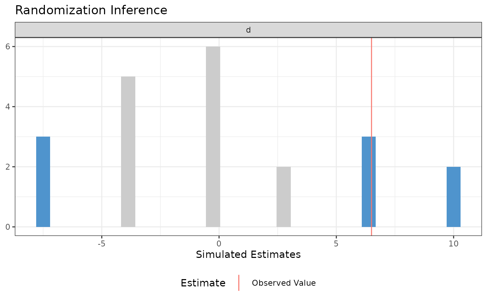
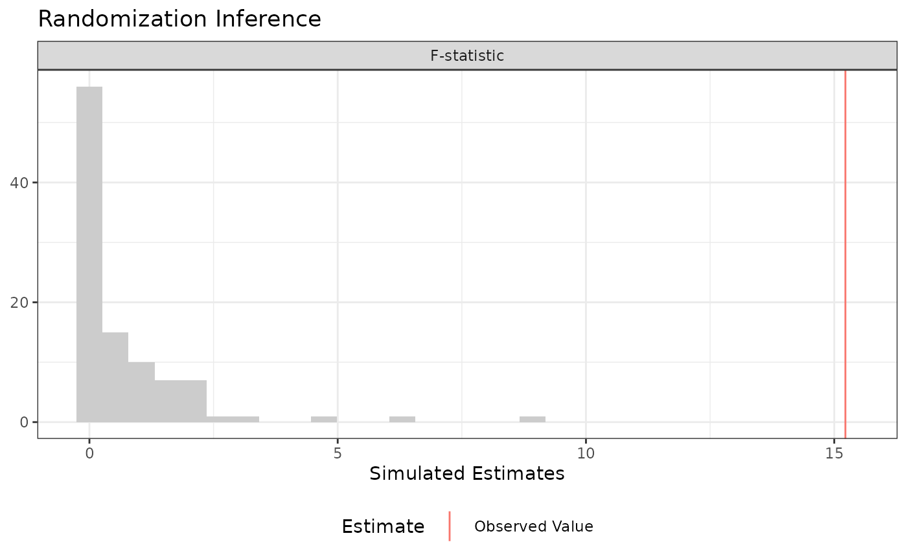
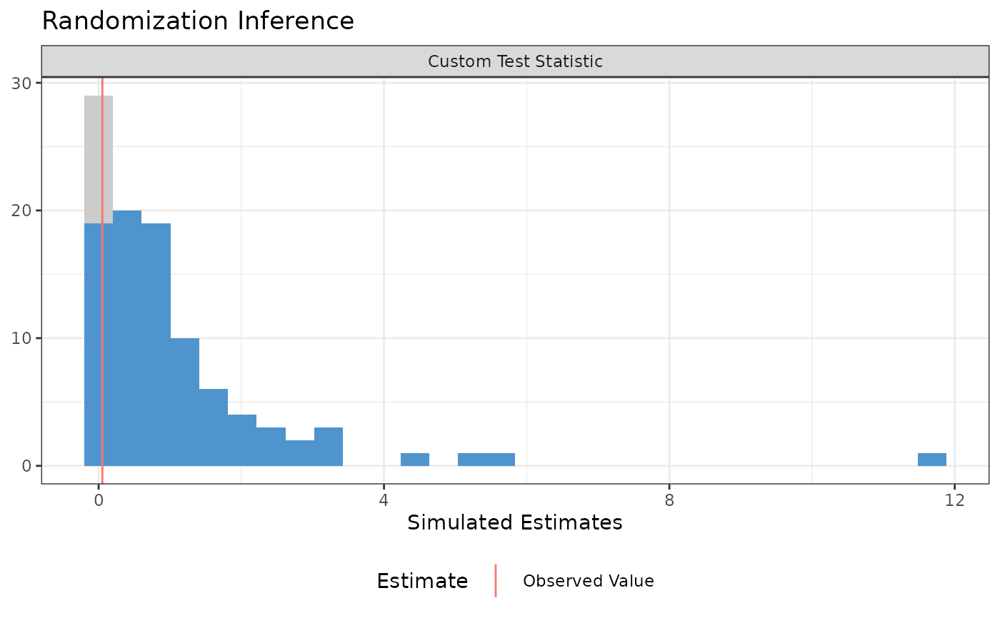

This function makes it easy to conduct three kinds of randomization inference.
Usage
conduct_ri(
formula = NULL,
model_1 = NULL,
model_2 = NULL,
test_function = NULL,
assignment = "Z",
outcome = NULL,
declaration = NULL,
sharp_hypothesis = 0,
potential_outcomes = NULL,
studentize = FALSE,
IPW = TRUE,
sampling_weights = NULL,
clusters = NULL,
permutation_matrix = NULL,
data,
sims = 1000,
progress_bar = FALSE,
p = "two-tailed"
)Arguments
- formula
an object of class formula, as in
lm. Use formula when conducting significance tests of an Average Treatment Effect estimate under a sharp null hypothesis. For the difference-in-means estimate, do not include covariates. For the OLS covariate-adjusted estimate, include covariates. Transformations of the outcome variable such aslog(Y) ~ Zare supported.- model_1
an object of class formula, as in
lm. Models 1 and 2 must be "nested." model_1 should be the "restricted" model and model_2 should be the "unrestricted" model.- model_2
an object of class formula, as in
lm. Models 1 and 2 must be "nested." model_1 should be the "restricted" model and model_2 should be the "unrestricted" model.- test_function
A function that takes data and returns a scalar test statistic.
- assignment
a character string that indicates which variable is randomly assigned. Defaults to "Z".
- outcome
a character string that indicates which variable is the outcome variable. Defaults to NULL.
- declaration
A random assignment declaration, created by
declare_ra.- sharp_hypothesis
either a numeric scalar or a numeric vector of length k - 1, where k is the number of treatment conditions. In a two-arm trial, this number is the hypothesized difference between the treated and untreated potential outcomes for each unit. In a multi-arm trial, each number in the vector is the hypothesized difference in potential outcomes between the baseline condition and each successive treatment condition.
- potential_outcomes
an optional character vector naming one column of
dataper treatment condition, giving each unit's hypothesized outcome under that condition. Columns are matched to conditions in sorted order. Supplying this states the sharp hypothesis directly and allows hypothesized effects that vary across units, whichsharp_hypothesiscannot express. Each unit's observed outcome must be preserved in the column matching the condition it was actually assigned to; only the other columns are hypothesized counterfactuals. Cannot be combined with a non-zerosharp_hypothesis.- studentize
logical, defaults to FALSE. Should the test statistic be the t-ratio rather than the estimated ATE? T-ratios will be calculated using HC2 robust standard errors, or CR2 clustered standard errors when
clustersis specified.- IPW
logical, defaults to TRUE. Should inverse probability weights be calculated?
- sampling_weights
a character string indicating which variable in
datacontains sampling weights. Sampling weights are fixed across permutations (they reflect the sampling design, not the assignment). When combined withIPW = TRUE, sampling and inverse probability weights are multiplied together.- clusters
a character string indicating which variable in
datacontains the cluster IDs. When supplied withstudentize = TRUE, CR2 clustered standard errors are used instead of HC2.- permutation_matrix
An optional matrix of random assignments, typically created by
obtain_permutation_matrix.- data
A data.frame.
- sims
the number of simulations. Defaults to 1000.
- progress_bar
logical, defaults to FALSE. Should a progress bar be displayed in the console?
- p
Should "two-tailed", "upper", or "lower" p-values be reported? Defaults to "two-tailed". For two-tailed p-values, whether or not a simulated value is as large or larger than the observed value is determined with respect to the distance to the sharp null.
Details
1. Conduct hypothesis tests under the sharp null when the test statistic is the difference-in-means or covariate-adjusted average treatment effect estimate. 2. Conduct "ANOVA" style hypothesis tests, where the f-statistic from two nested models is the test statistic. This procedure is especially helpful when testing interaction terms under null of constant effects. 3. Arbitrary (scalar) test statistics
Examples
# Data from Gerber and Green Table 2.2
table_2.2 <-
data.frame(d = c(1, 0, 0, 0, 0, 0, 1),
y = c(15, 15, 20, 20, 10, 15, 30))
## Declare randomization procedure
declaration <- randomizr::declare_ra(N = 7, m = 2)
## Conduct Randomization Inference
out <- conduct_ri(y ~ d,
declaration = declaration,
assignment = "d",
sharp_hypothesis = 0,
data = table_2.2)
summary(out)
#> term estimate two_tailed_p_value
#> 1 d 6.5 0.3809524
plot(out)

tidy(out)
#> term estimate p.value
#> 1 d 6.5 0.3809524
# Using a custom permutation matrix
permutation_matrix <-
matrix(c(0, 0, 0, 0, 0, 0, 1,
0, 0, 0, 0, 0, 1, 0,
0, 0, 0, 0, 1, 0, 0,
0, 0, 0, 1, 0, 0, 0,
0, 0, 1, 0, 0, 0, 0,
0, 1, 0, 0, 0, 0, 0,
1, 0, 0, 0, 0, 0, 0),
ncol = 7)
conduct_ri(y ~ d, assignment = "d", data = table_2.2,
permutation_matrix = permutation_matrix)
#> term estimate two_tailed_p_value
#> 1 d 6.5 0.2857143
# Randomization Inference for an Interaction
N <- 100
declaration <- randomizr::declare_ra(N = N, m = 50)
Z <- randomizr::conduct_ra(declaration)
X <- rnorm(N)
Y <- .9 * X + .2 * Z + 1 * X * Z + rnorm(N)
dat <- data.frame(Y, X, Z)
ate_obs <- coef(lm(Y ~ Z, data = dat))[[2]]
out <-
conduct_ri(
model_1 = Y ~ Z + X,
model_2 = Y ~ Z + X + Z * X,
declaration = declaration,
assignment = "Z",
sharp_hypothesis = ate_obs,
data = dat, sims = 100
)
plot(out)

summary(out)
#> term estimate two_tailed_p_value
#> 1 F-statistic 15.22457 0
# Randomization Inference for arbitrary test statistics
N <- 100
declaration <- randomizr::declare_ra(N = N, m = 50)
Z <- randomizr::conduct_ra(declaration)
X <- rnorm(N)
Y <- .9 * X + .2 * Z + rnorm(N)
dat <- data.frame(Y, X, Z)
balance_fun <- function(data) {
f_stat <- summary(lm(Z ~ X, data = data))$f[1]
names(f_stat) <- NULL
return(f_stat)
}
out <-
conduct_ri(
test_function = balance_fun,
declaration = declaration,
assignment = "Z",
sharp_hypothesis = 0,
data = dat, sims = 100
)
plot(out)

summary(out)
#> term estimate two_tailed_p_value
#> 1 Custom Test Statistic 0.05245928 0.9
tidy(out)
#> term estimate p.value
#> 1 Custom Test Statistic 0.05245928 0.9